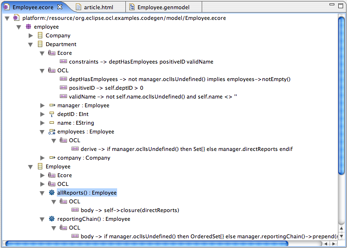
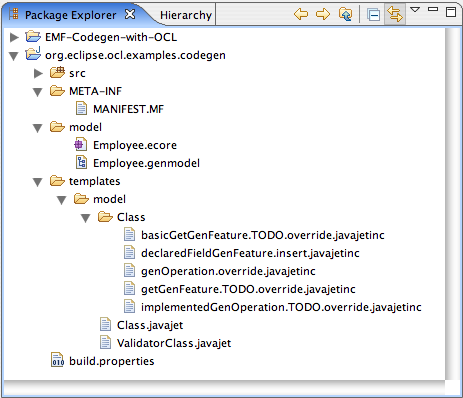
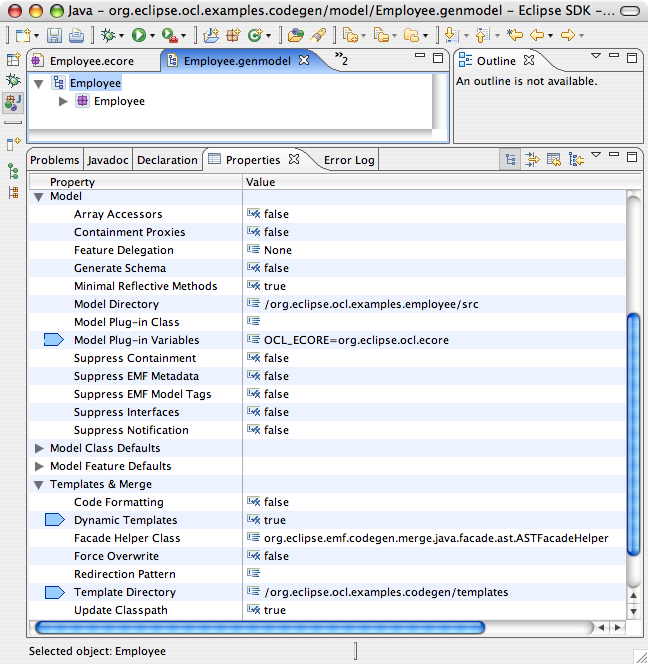
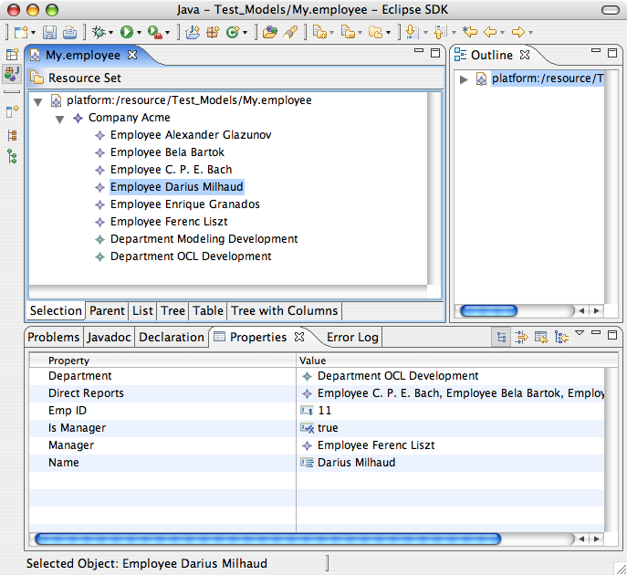
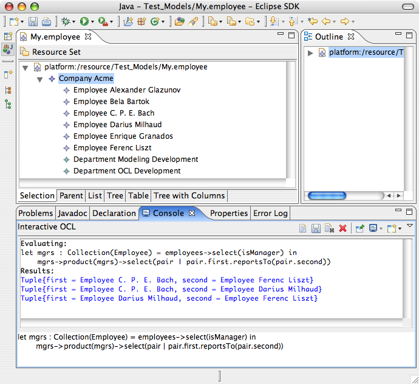
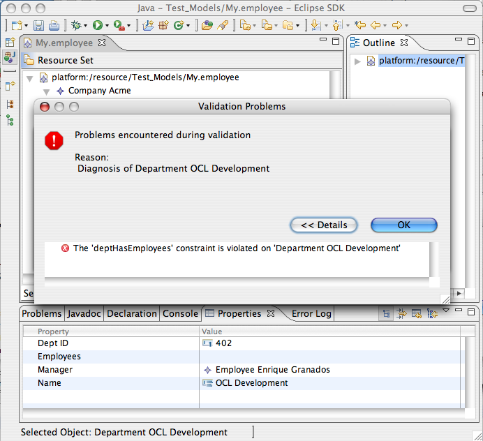

The Goal
First, let's have a look at what the result of our endeavour should look like.
Our abstract goal is to make it easy for the modeler/developer to ensure model integrity. In data modeling, data integrity is typically achieved by two different mechanisms: integrity checks specified as invariant constraints and elimination of redundant data by deriving calculable values. The former has a reactive nature and the latter a more proactive one. Happily, OCL is well suited to the specification of both constraints and derived values (as properties and operations), being a simple but powerful expression language designed to be embedded in UML models (and models of related languages such as Ecore).
Our concrete goal in this article is to generate a complete model implementation for the following Ecore model, without having to fill in any TODOs with custom code:
|  |
When we have finished, our Ecore model will include annotations to provide OCL specifications of invariant constraints, derived properties, and operations. The generated model classes will have methods implementing these as described in the next few sections.
Invariant Constraints
The EMF Validation Framework prescribes the form of invariant constraints: boolean-valued operations in the package's validator class with the object to be validated, a DiagnosticChain, and a Map as input parameters. Violation of a constraint adds a Diagnostic to the chain and results in a false return value.
Before OCL ...
Without OCL, our generated code for invariant constraints is incomplete:
we have to replace a TODO comment ( )
with some useful code and remember to mark the method as not generated:
)
with some useful code and remember to mark the method as not generated:
/**
* Validates the deptHasEmployees constraint of '<em>Department</em>'.
* <!-- begin-user-doc -->
* <!-- end-user-doc -->
* @generated
*/
public boolean validateDepartment_deptHasEmployees(Department department,
DiagnosticChain diagnostics, Map<Object, Object> context) {
 // TODO implement the constraint
// -> specify the condition that violates the constraint
// -> verify the diagnostic details, including severity, code, and message
// Ensure that you remove @generated or mark it @generated NOT
if (false) {
if (diagnostics != null) {
diagnostics.add
(new BasicDiagnostic
(Diagnostic.ERROR,
DIAGNOSTIC_SOURCE,
0,
EcorePlugin.INSTANCE.getString("_UI_GenericConstraint_diagnostic", //$NON-NLS-1$
new Object[] { "deptHasEmployees", getObjectLabel(department, //$NON-NLS-1$
context) }),
new Object[] { department }));
}
return false;
}
return true;
}
// TODO implement the constraint
// -> specify the condition that violates the constraint
// -> verify the diagnostic details, including severity, code, and message
// Ensure that you remove @generated or mark it @generated NOT
if (false) {
if (diagnostics != null) {
diagnostics.add
(new BasicDiagnostic
(Diagnostic.ERROR,
DIAGNOSTIC_SOURCE,
0,
EcorePlugin.INSTANCE.getString("_UI_GenericConstraint_diagnostic", //$NON-NLS-1$
new Object[] { "deptHasEmployees", getObjectLabel(department, //$NON-NLS-1$
context) }),
new Object[] { department }));
}
return false;
}
return true;
}
After OCL ...
The following example shows the desired implementation of the constraint on departments stipulating that a Department that has a manager must also have one or more employees. Note that the OCL expression of this constraint is stored in the EMF metadata; it is not manifest in the Java™ code at all. Thus, changing the constraint definition and re-testing doesn't even require that we regenerate the code (only if we use the GenModel option to initialize the EPackage from the Ecore model at run-time).
/**
* Validates the deptHasEmployees constraint of '<em>Department</em>'.
* <!-- begin-user-doc -->
* <!-- end-user-doc -->
* @generated
*/
public boolean validateDepartment_deptHasEmployees(Department department,
DiagnosticChain diagnostics, Map<Object, Object> context) {
if (department_deptHasEmployeesInvOCL == null) {
OCL.Helper helper = OCL_ENV.createOCLHelper();
 helper.setContext(EmployeePackage.Literals.DEPARTMENT);
EAnnotation ocl = EmployeePackage.Literals.DEPARTMENT.getEAnnotation(OCL_ANNOTATION_SOURCE);
helper.setContext(EmployeePackage.Literals.DEPARTMENT);
EAnnotation ocl = EmployeePackage.Literals.DEPARTMENT.getEAnnotation(OCL_ANNOTATION_SOURCE);
 String expr = ocl.getDetails().get("deptHasEmployees"); //$NON-NLS-1$
try {
String expr = ocl.getDetails().get("deptHasEmployees"); //$NON-NLS-1$
try {
 department_deptHasEmployeesInvOCL = helper.createInvariant(expr);
}
catch (ParserException e) {
throw new UnsupportedOperationException(e.getLocalizedMessage());
}
}
department_deptHasEmployeesInvOCL = helper.createInvariant(expr);
}
catch (ParserException e) {
throw new UnsupportedOperationException(e.getLocalizedMessage());
}
}
 Query<EClassifier, ?, ?> query = OCL_ENV.createQuery(department_deptHasEmployeesInvOCL);
Query<EClassifier, ?, ?> query = OCL_ENV.createQuery(department_deptHasEmployeesInvOCL);
 if (!query.check(department)) {
if (diagnostics != null) {
diagnostics.add
(new BasicDiagnostic
(Diagnostic.ERROR,
DIAGNOSTIC_SOURCE,
0,
EcorePlugin.INSTANCE.getString("_UI_GenericConstraint_diagnostic", //$NON-NLS-1$
new Object[] { "deptHasEmployees", getObjectLabel(department, //$NON-NLS-1$
context) }),
new Object[] { department }));
}
return false;
}
return true;
}
if (!query.check(department)) {
if (diagnostics != null) {
diagnostics.add
(new BasicDiagnostic
(Diagnostic.ERROR,
DIAGNOSTIC_SOURCE,
0,
EcorePlugin.INSTANCE.getString("_UI_GenericConstraint_diagnostic", //$NON-NLS-1$
new Object[] { "deptHasEmployees", getObjectLabel(department, //$NON-NLS-1$
context) }),
new Object[] { department }));
}
return false;
}
return true;
}
Our validation method will start by checking ( )
whether we have previously parsed and cached the OCL constraint. If not,
then we prepare the OCL parsing environment with the context classifier at
)
whether we have previously parsed and cached the OCL constraint. If not,
then we prepare the OCL parsing environment with the context classifier at  and obtain the constraint expression from an annotation on the EClassifier
at
and obtain the constraint expression from an annotation on the EClassifier
at  . The OCL
expression is parsed as an invariant constraint at
. The OCL
expression is parsed as an invariant constraint at  and cached so that it will not have to be parsed again.
and cached so that it will not have to be parsed again.
Once we have our parsed OCL constraint, we construct an executable
Query for it ( )
and check whether this object satisfies the constraint (
)
and check whether this object satisfies the constraint ( ).
Java's this reference is bound to OCL's self variable.
).
Java's this reference is bound to OCL's self variable.
Derived Properties
EMF implements derived properties as structural features that are marked as transient (not persisted) and volatile (no storage is allocated). Usually, they are also not changeable.
Before OCL ...
Again, EMF's default code generation requires us to complete the implementation of the derivation and to protect our hand-written code from being overwritten the next time that we generate. The starting point of this process is:
/**
* <!-- begin-user-doc -->
* <!-- end-user-doc -->
* @generated
*/
public EList getEmployees() {
// TODO: implement this method to return the 'Employees' reference list
// Ensure that you remove @generated or mark it @generated NOT
throw new UnsupportedOperationException();
}
After OCL ...
Once again, OCL can do all of the heavy lifting for us:
/**
* <!-- begin-user-doc -->
* <!-- end-user-doc -->
* @generated
*/
public EList getEmployees() {
EStructuralFeature eFeature = EmployeePackage.Literals.DEPARTMENT__EMPLOYEES;
if (employeesDeriveOCL == null) {
Helper helper = OCL_ENV.createOCLHelper();
helper.setAttributeContext(EmployeePackage.Literals.DEPARTMENT, eFeature);
EAnnotation ocl = eFeature.getEAnnotation(OCL_ANNOTATION_SOURCE);
String derive = (String) ocl.getDetails().get("derive"); //$NON-NLS-1$
try {
employeesDeriveOCL = helper.createQuery(derive);
} catch (ParserException e) {
throw new UnsupportedOperationException(e.getLocalizedMessage());
}
}
Query<EClassifier, ?, ?> query = OCL_ENV.createQuery(employeesDeriveOCL);
@SuppressWarnings("unchecked")
Collection<Employee> result = (Collection<Employee>) query.evaluate(this);
return new EcoreEList.UnmodifiableEList<Employee>(this, eFeature, result.size(), result.toArray());
}
This method is just like the constraint, except in a few details. First,
as this is a property derivation, the OCL context is the structural feature
( ), not the
classifier. Also, since it is not a constraint, we parse the OCL as a
query (
), not the
classifier. Also, since it is not a constraint, we parse the OCL as a
query ( ), which
is not required to be a boolean-valued expression. Finally, queries are
evaluated (
), which
is not required to be a boolean-valued expression. Finally, queries are
evaluated ( ),
not checked, returning a result conformant to the declared property type. Our
template will have to account for multi-valued and scalar properties of both
reference and primitive types, taking care that ELists implement the
InternalEList interface as expected by much of the EMF machinery.
),
not checked, returning a result conformant to the declared property type. Our
template will have to account for multi-valued and scalar properties of both
reference and primitive types, taking care that ELists implement the
InternalEList interface as expected by much of the EMF machinery.
Operations
OCL is often used to specify operation precondition and postcondition constraints. A third kind of OCL expression defined on operations is the body expression, which defines the value of the operation in terms of its parameters and the properties of the context classifier.
Before OCL ...
At the risk of being too repetitive, let us see what EMF generates by default for the implementation of EOperations:
/**
* <!-- begin-user-doc -->
* <!-- end-user-doc -->
* @generated
*/
public boolean reportsTo(Employee mgr) {
// TODO: implement this method
// Ensure that you remove @generated or mark it @generated NOT
throw new UnsupportedOperationException();
}
After OCL ...
Here, our OCL-based code is just a little more elaborate (complicated by the fact of operations having parameters):
/**
* <!-- begin-user-doc -->
* <!-- end-user-doc -->
* @generated
*/
public boolean reportsTo(Employee mgr) {
if (reportsToBodyOCL == null) {
EOperation eOperation = EmployeePackage.Literals.EMPLOYEE.getEOperations().get(2);
OCL.Helper helper = OCL_ENV.createOCLHelper();
helper.setOperationContext(EmployeePackage.Literals.EMPLOYEE, eOperation);
EAnnotation ocl = eOperation.getEAnnotation(OCL_ANNOTATION_SOURCE);
String body = (String) ocl.getDetails().get("body"); //$NON-NLS-1$
try {
reportsToBodyOCL = helper.createQuery(body);
} catch (ParserException e) {
throw new UnsupportedOperationException(e.getLocalizedMessage());
}
}
Query<EClassifier, ?, ?> query = OCL_ENV.createQuery(reportsToBodyOCL);
EvaluationEnvironment<?, ?, ?, ?, ?> evalEnv = query.getEvaluationEnvironment();
evalEnv.add("mgr", mgr); //$NON-NLS-1$
return ((Boolean) query.evaluate(this)).booleanValue();
}
Again this method is very similar to the accessor for the derived property
illustrated above. The chief distinction is that the context
( ) of the
OCL expression is an operation, which ensures that the names and types of the
parameters (if any) are known to the OCL parser. When invoking the operation,
these parameter variables are bound (
) of the
OCL expression is an operation, which ensures that the names and types of the
parameters (if any) are known to the OCL parser. When invoking the operation,
these parameter variables are bound ( )
to the actual argument values (the wildcards indicate that the type variables
aren't important when we are only binding operation-call arguments).
Finally, although this is not peculiar to
operations (versus derived properties), the result in this case (
)
to the actual argument values (the wildcards indicate that the type variables
aren't important when we are only binding operation-call arguments).
Finally, although this is not peculiar to
operations (versus derived properties), the result in this case ( )
is a primitive type whereas previously we saw a reference collection type.
)
is a primitive type whereas previously we saw a reference collection type.
OCL, by design, is a side-effect-free language. This means, in particular, that an OCL expression cannot modify any elements of the model, nor even temporary objects that it creates (such as strings, collections, and tuples). However, we can use OCL to implement operations that modify the properties of the receiver using OCL's Tuple types. A tuple is a set of name-value pairs (called "tuple parts"), and given an expression that results in a tuple, generated code could assign the tuple's values to the properties corresponding to their names. If the tuple has a result part, this could even be used as a return value for the operation.
| Extend the code generation example of this article to support side-effects. Hint: this will require parsing the OCL expressions in the JET template, itself, in order to detect that an expression has a tuple type and to determine the names of the tuple parts. In the MDT OCL implementation, tuples are just dynamic EObjects with EStructuralFeatures corresponding to the tuple parts. |
Prerequisites
In addition to the latest available stable EMF build (milestone M4 of version 2.3 or later), we will be using the MDT OCL component (milestone M5 of version 1.1 or later) to parse and interpret OCL expressions on the Ecore metamodel, so our generated code will have an additional dependency on the org.eclipse.ocl.ecore plug-in.
| To obtain the OCL plug-ins, download the SDK Zip and unzip it onto your Eclipse installation. |
Next, we create our EMF project. I named it org.eclipse.ocl.examples.codegen; the name does not matter. The basic non-UI plug-in template is sufficient, but we will add a model/ and a templates/ folder to it. The former will contain our Ecore and code-gen models, the latter our custom JET templates.
|  |
Now, we create the Employee model. Save the Employee.ecore file in your model/ folder and open it.
| Browse the annotations having the OCL source to see the kinds of features we will generate using OCL. |
Create the Employee.genmodel file from this model: select the Employee.ecore file and choose "File -> New -> Other...", taking the "EMF Modeling Framework / EMF Model" option.
In the genmodel editor, enable dynamic generation templates and specify the templates/ directory as shown here:
|  |
Because our generated code requires the MDT OCL component, we add the org.eclipse.ocl.ecore plug-in as a Model Plug-in Variable. Also, our custom templates depend on EMF 2.3's Java 5.0-style code generation, so be sure to set 5.0 in the Compliance Level property.
No other changes to the genmodel are required. The rest of our work is in the templates (and in the OCL specifications in the Ecore model).
The Templates
In this section, we will explore (in not too great detail) the templates that will generate the code that we specified above. The templates are necessarily ugly to look at and contain a good deal of content unrelated to the task at hand. Therefore, this article will only highlight some of the more salient bits. For the complete text, see the accompanying example source project.
If you thought that you didn't know JET but the syntax of these templates looks familiar to you, then you are probably versant in JSP (Java Server Pages™) technology. The JET syntax is very similar, and the template compilation is essentially the same, even to compiling the resulting sources and dynamically loading the binary output into the host VM.
If you are not familiar with either JET or JSP, the EMF home page has plenty of documentation to get you started. See below for some references. Basically, there are three key things to know:
- code between <% and %> marks is Java code, which JET compiles and executes. These code fragments can declare and assign variables, compute values, define for loops, etc.
- code between %> and <% marks is a text fragment that JET will emit to the generated output. This is akin to a System.out.print(...) call with the literal text as the argument. Where these text fragments occur in <% if (...) %> conditions or <% for (...) %> loops, they are conditionally or repeatedly emitted, etc.
- code betwen <%= and %> marks computes a string and inserts it into the surrounding text fragment
We will also encounter a couple of convenient constructs in EMF's templates that greatly simplify customization and promote re-use by letting our custom templates define only what's different in our system from base EMF. These are insertion and override points.
An insertion point is indicated by an <%@include%> directive with a relative path to a template fragment that should be inserted at this point. The inclusion has a fail="silent" attribute instructing JET to just proceed if the include cannot be found. EMF has identified a number of such anchor points where it would be useful to inject custom code.
An overrideable block is indicated by an <%@include%> directive with a relative path to a template fragment that should replace all of the content from a <%@start%> directive to the following <%@end%>. An override has a fail="alternative" attribute which instructs JET to just process everything between the start and end if the override cannot be found.
Basic Templates
We will be customizing the implementation classes of our model types and the validator class. The Class.javajet template has a wealth of override and insertion points for us to work with, so our class template will be very simple (the authors of this template anticipated where we might want to make customizations). The ValidatorClass.javajet template has no insertions or overrides, so we will have to replace it in its entirety (starting with a copy of EMF's original).
The templates/model/Class.javajet file looks like:
<%@ jet package="org.eclipse.ocl.examples.codegen.templates.model" imports="java.util.* org.eclipse.emf.codegen.ecore.genmodel.* org.eclipse.emf.ecore.*" class="Class" version="$Id: index.html,v 1.1 2007/02/21 20:19:09 wbeaton Exp $" %>
<% final String oclNsURI = "http://www.eclipse.org/ocl/examples/OCL"; %>
<%@ include file="Class.javajet"%>
The first line declares a package for our custom template and imports. More interesting
is  , where we
define a constant that our other insertion and override templates will use: the source identifying
the annotations containing the OCL specifications of our model. The last
line (
, where we
define a constant that our other insertion and override templates will use: the source identifying
the annotations containing the OCL specifications of our model. The last
line ( ) includes
the default template. Most of our other templates will override or insert at various
points in this template.
) includes
the default template. Most of our other templates will override or insert at various
points in this template.
Generated Fields
We want to cache parsed OCL expressions in static fields of the generated implementation classes. EMF's default template provides a convenient insertion point for additional fields: the templates/model/Class/declaredFieldGenFeature.insert.javajetinc file:
<%if (isImplementation) { boolean hasOCL = false;%>
<%for (GenOperation genOperation : genClass.getImplementedGenOperations()) {
String body = null;
EAnnotation ocl = genOperation.getEcoreOperation().getEAnnotation(oclNsURI);
if (ocl != null) body = ocl.getDetails().get("body");
if (body != null) { hasOCL = true;%>
/**
* The parsed OCL expression for the body of the '{@link #<%=genOperation.getName()%> <em><%=genOperation.getFormattedName()%></em>}' operation.
* <!-- begin-user-doc -->
* <!-- end-user-doc -->
* @see #<%=genOperation.getName()%>
* @generated
*/
private static OCLExpression<EClassifier> <%=genOperation.getName()%>BodyOCL;
<%}
}
for (GenFeature genFeature : genClass.getImplementedGenFeatures()) {
// ... similar processing as for GenOperations ...
}
if (hasOCL) { %>
private static final String OCL_ANNOTATION_SOURCE = "<%=oclNsURI%>";<%=genModel.getNonNLS()%>
private static final org.eclipse.ocl.ecore.OCL OCL_ENV = org.eclipse.ocl.ecore.OCL.newInstance();
<% }
}%>
(omitting the genModel.getImportedName(...) calls in references to Java types, for clarity).
First, we loop ( )
through the class's GenOperations, generating a static
field (
)
through the class's GenOperations, generating a static
field ( )
of type OCLExpression for each operation that has a body
expression or an invariant constraint annotation (using the constant
defined in our Class.javajet template, above). We also do essentially
the same (
)
of type OCLExpression for each operation that has a body
expression or an invariant constraint annotation (using the constant
defined in our Class.javajet template, above). We also do essentially
the same ( )
for all GenFeatures, looking for derive annotations. Finally,
if after all of this looping we have generated at least one OCL expression field,
we also emit a manifest constant for the OCL annotation source, which is used
in the generated methods.
)
for all GenFeatures, looking for derive annotations. Finally,
if after all of this looping we have generated at least one OCL expression field,
we also emit a manifest constant for the OCL annotation source, which is used
in the generated methods.
Operation Template
As an example of the generated methods, let us consider the template for the OCL-specified operations. The templates for derived properties will be similar).
The following is the content of the templates/model/Class/implementedGenOperation.TODO.override.javajetinc
file. This is an optional template that overrides the default // TODO
comment in generated EOperations:
<%
String body = null;
EOperation eOperation = genOperation.getEcoreOperation();
EAnnotation ocl = eOperation.getEAnnotation(oclNsURI);
if (ocl != null) body = ocl.getDetails().get("body");
if (body == null) { %>
// TODO: implement this method
// Ensure that you remove @generated or mark it @generated NOT
throw new UnsupportedOperationException();
<% } else {
final String expr = genOperation.getName() + "BodyOCL"; %>
if (<%=expr%> == null) {
EOperation eOperation = <%=genOperation.getGenClass().getQualifiedClassifierAccessor()%>.getEOperations().get(<%=genOperation.getGenClass().getGenOperations().indexOf(genOperation)%>);
org.eclipse.ocl.ecore.OCL.Helper helper = OCL_ENV.createOCLHelper();
helper.setOperationContext(<%=genOperation.getGenClass().getQualifiedClassifierAccessor()%>, eOperation);
EAnnotation ocl = eOperation.getEAnnotation(OCL_ANNOTATION_SOURCE);
String body = ocl.getDetails().get("body");<%=genModel.getNonNLS()%>
try {
<%=expr%> = helper.createQuery(body);
} catch (org.eclipse.ocl.ParserException e) {
throw new UnsupportedOperationException(e.getLocalizedMessage());
}
}
org.eclipse.ocl.Query<EClassifier, ?, ?> query = OCL_ENV.createQuery(<%=expr%>);
<% if (!genOperation.getEcoreOperation().getEParameters().isEmpty()) { %>
org.eclipse.ocl.EvaluationEnvironment<?, ?, ?, ?, ?> evalEnv = query.getEvaluationEnvironment();
<% for (EParameter param : genOperation.getEcoreOperation().getEParameters()) { %>
evalEnv.add("<%=param.getName()%>", <%=param.getName()%>);<%=genModel.getNonNLS()%>
<% }
}
 if (genOperation.isListType()) { %>
@SuppressWarnings("unchecked")
Collection<<%=genOperation.getListItemType()%>> result = (Collection<<%=genOperation.getListItemType()%>>) query.evaluate(this);
return new BasicEList.UnmodifiableEList<<%=genOperation.getListItemType()%>>(result.size(), result.toArray());
<% } else if (genOperation.isPrimitiveType()) { %>
return ((<%=genOperation.getObjectType()%>) query.evaluate(this)).<%=genOperation.getPrimitiveValueFunction()%>();
<% } else { %>
return (<%=genOperation.getImportedType()%>) query.evaluate(this);
<% }
} %>
if (genOperation.isListType()) { %>
@SuppressWarnings("unchecked")
Collection<<%=genOperation.getListItemType()%>> result = (Collection<<%=genOperation.getListItemType()%>>) query.evaluate(this);
return new BasicEList.UnmodifiableEList<<%=genOperation.getListItemType()%>>(result.size(), result.toArray());
<% } else if (genOperation.isPrimitiveType()) { %>
return ((<%=genOperation.getObjectType()%>) query.evaluate(this)).<%=genOperation.getPrimitiveValueFunction()%>();
<% } else { %>
return (<%=genOperation.getImportedType()%>) query.evaluate(this);
<% }
} %>
(again omitting the genModel.getImportedName(...) calls, for clarity).
First, we look for an OCL annotation with a body expression ( ).
If we do not find one, then we emit the default comment (
).
If we do not find one, then we emit the default comment ( )
and are done. Otherwise, we continue by generating the lazy initialization (
)
and are done. Otherwise, we continue by generating the lazy initialization ( )
of the static OCL expression, followed by the code (
)
of the static OCL expression, followed by the code ( )
that constructs the query and evaluation environment.
)
that constructs the query and evaluation environment.
At  ,
we loop through the operation's parameters to generate the argument bindings
(
,
we loop through the operation's parameters to generate the argument bindings
(  ) in the
evaluation environment. We do this only in the case that the operation has parameters
) in the
evaluation environment. We do this only in the case that the operation has parameters
Finally, at  ,
we examine the result type of the operation and determine what kind of return
statement to generate, with the appropriate cast on the result of the query
evaluation. The operation may be multi-valued, in which case the
result is an EList type. Otherwise, it is a scalar which may be a
primitive type, which OCL returns as a wrapper object. Note that a more robust
implementation would have to consider also the possibility that the genmodel
specifies that multi-valued features use array types rather than lists.
,
we examine the result type of the operation and determine what kind of return
statement to generate, with the appropriate cast on the result of the query
evaluation. The operation may be multi-valued, in which case the
result is an EList type. Otherwise, it is a scalar which may be a
primitive type, which OCL returns as a wrapper object. Note that a more robust
implementation would have to consider also the possibility that the genmodel
specifies that multi-valued features use array types rather than lists.
Validator Template
The last template that we will examine is that for the package's validator class. The Ecore extended meta-data annotation can specify a list of named constraints under the constraints detail key. Ordinarily, this results in stub methods being generated in the validator class, named validateConstraint according to each constraint's name, with TODO comments to replace by hand.
However, using OCL, we can specify the implementations of these validation methods. In our example, we will attach an OCL annotation to the EClassifier with a detail entry for each of the constraints listed in the Ecore annotation. Because the ValidatorClass.javajet template does not define convenient insertion and override templates, we must replace the entire template in our project. The following excerpts show where we customize this template:
As in the Class.javajet template, we declare a constant
( )
for the OCL annotation source.
Next, we add to the list of fields generated in the validator class, inserting fields for the
parsed OCL constraints before the constructor:
)
for the OCL annotation source.
Next, we add to the list of fields generated in the validator class, inserting fields for the
parsed OCL constraints before the constructor:
<%boolean hasOCL = false;
for (GenClassifier genClassifier : genPackage.getGenClassifiers()) {
EClassifier eClassifier = genClassifier.getEcoreClassifier();
EAnnotation annotation = eClassifier.getEAnnotation(oclNsURI);
if (annotation != null) {
for (String constraint : EcoreUtil.getConstraints(eClassifier)) {
if (annotation.getDetails().get(constraint) != null) {
hasOCL = true;%>
/**
* The parsed OCL expression for the definition of the '<em><%=constraint%></em>' invariant constraint.
* <!-- begin-user-doc -->
* <!-- end-user-doc -->
* @generated
*/
private static org.eclipse.ocl.ecore.Constraint <%=genClassifier.getSafeUncapName()%>_<%=constraint%>InvOCL;
<%}
}
}
}
if (hasOCL) {%>
private static final String OCL_ANNOTATION_SOURCE = "<%=oclNsURI%>";<%=genModel.getNonNLS()%>
private static final org.eclipse.ocl.ecore.OCL OCL_ENV = org.eclipse.ocl.ecore.OCL.newInstance();
<%}%>
/**
* Creates an instance of the switch.
* <!-- begin-user-doc -->
* <!-- end-user-doc -->
* @generated
*/
public <%=genPackage.getValidatorClassName()%>()
{
super();
<%for (GenPackage baseGenPackage : genPackage.getAllValidatorBaseGenPackages()) {%>
<%=genPackage.getValidatorPackageUniqueSafeName(baseGenPackage)%>Validator = <%=baseGenPackage.getImportedValidatorClassName()%>.INSTANCE;
<%}%>
}
(once again omitting the genModel.getImportedName(...) calls, for clarity).
For each constraint named in the Ecore annotation, we define
( ) a static OCL
Constraint field if the OCL annotation has a corresponding constraint
expression (
) a static OCL
Constraint field if the OCL annotation has a corresponding constraint
expression ( ),
using the Classifier name to ensure uniqueness of constraint names. As in
the class template, if there is any OCL code to be generated for
invariant constraints, we also emit (
),
using the Classifier name to ensure uniqueness of constraint names. As in
the class template, if there is any OCL code to be generated for
invariant constraints, we also emit ( )
a constant for the OCL annotation and a field storing the OCL environment.
)
a constant for the OCL annotation and a field storing the OCL environment.
Lastly, we enhance the default case for the generated validation method (where the constraint name is not one of the pre-defined constraints recognized by EMF) to look for an OCL expression, if available:
<%} else { EAnnotation annotation = genClassifier.getEcoreClassifier().getEAnnotation(oclNsURI);
if (annotation != null && annotation.getDetails().get(constraint) != null) {
String invOCL = genClassifier.getSafeUncapName() + "_" + constraint + "InvOCL";%>
if (<%=invOCL%> == null)
{
OCL.Helper helper = OCL_ENV.createOCLHelper();
helper.setContext(<%=genClassifier.getQualifiedClassifierAccessor()%>);
EAnnotation ocl = <%=genClassifier.getQualifiedClassifierAccessor()%>.getEAnnotation(OCL_ANNOTATION_SOURCE);
String expr = ocl.getDetails().get("<%=constraint%>");<%=genModel.getNonNLS()%>
try
{
<%=invOCL%> = helper.createInvariant(expr);
}
catch (org.eclipse.ocl.ParserException e)
{
throw new UnsupportedOperationException(e.getLocalizedMessage());
}
}
org.eclipse.ocl.Query<EClassifier, ?, ?> query = OCL_ENV.createQuery(<%=invOCL%>);
if (!query.check(<%=genClassifier.getSafeUncapName()%>))
{
if (<%=diagnostics%> != null)
{
<%=diagnostics%>.add
(new <%=genModel.getImportedName("org.eclipse.emf.common.util.BasicDiagnostic")%>
(<%=genModel.getImportedName("org.eclipse.emf.common.util.Diagnostic")%>.ERROR,
DIAGNOSTIC_SOURCE,
0,
<%=genModel.getImportedName("org.eclipse.emf.ecore.plugin.EcorePlugin")%>.INSTANCE.getString("_UI_GenericConstraint_diagnostic", new Object[] { "<%=constraint%>", getObjectLabel(<%=genClassifier.getSafeUncapName()%>, <%=context%>) }),<%=genModel.getNonNLS()%><%=genModel.getNonNLS(2)%>
new Object[] { <%=genClassifier.getSafeUncapName()%> }));
}
return false;
}
return true;
<%} else {%>
// TODO implement the constraint
// -> specify the condition that violates the constraint
// -> verify the diagnostic details, including severity, code, and message
// Ensure that you remove @generated or mark it @generated NOT
if (false)
{
if (<%=diagnostics%> != null)
{
<%=diagnostics%>.add
(new <%=genModel.getImportedName("org.eclipse.emf.common.util.BasicDiagnostic")%>
(<%=genModel.getImportedName("org.eclipse.emf.common.util.Diagnostic")%>.ERROR,
DIAGNOSTIC_SOURCE,
0,
<%=genModel.getImportedName("org.eclipse.emf.ecore.plugin.EcorePlugin")%>.INSTANCE.getString("_UI_GenericConstraint_diagnostic", new Object[] { "<%=constraint%>", getObjectLabel(<%=genClassifier.getSafeUncapName()%>, <%=context%>) }),<%=genModel.getNonNLS()%><%=genModel.getNonNLS(2)%>
new Object[] { <%=genClassifier.getSafeUncapName()%> }));
}
return false;
}
return true;
<%}}}%>
(once again omitting the genModel.getImportedName(...) calls, for clarity).
For each constraint for which the OCL annotation has a specification
( ), we fill
in the validation method. As usual, we lazily initialize
(
), we fill
in the validation method. As usual, we lazily initialize
( ) the parsed OCL, except
that this time it is parsed as an invariant Constraint
(
) the parsed OCL, except
that this time it is parsed as an invariant Constraint
( ) instead of as a
query expression.
) instead of as a
query expression.
Again, as before, we generate code to create a Query object
( ). The difference,
here, is that the Constraint is checked
(
). The difference,
here, is that the Constraint is checked
( ), not evaluated,
to determine whether it is met by the target object.
), not evaluated,
to determine whether it is met by the target object.
Finally, in the case that no OCL specification is available, the default behaviour of
the template is preserved. At  the stub method body is emitted with a reminder comment and a place to insert the constraint
logic.
the stub method body is emitted with a reminder comment and a place to insert the constraint
logic.
Source Code
To run the full example or simply to view the source code, unzip ocl-codegen.zip into your workspace. Or, better yet, use the Eclipse Project Import wizard to import the ZIP as a project.
| Open the model/employee.genmodel file in the org.eclipse.emf.ocl.examples.codegen project and invoke "Generate All" to see the code that is generated for the OCL-specified features. Launch a run-time workbench to create Employee models, validate them (see if you can violate the "deptHasEmployees" constraint defined on the Department class), and perform queries using the Interactive OCL Console (use the "New Console" menu in the Console view). |
The following figure shows an example Employee model with an employee selected who has a manager associated with a department and is also a manager of others. The Department and Is Manager properties are derived.
|  |
The Interactive OCL Console can be used to exercise the operations. In this example, we find all of the "reports to (directly or indirectly)" relationships among managers in the Acme company:
|  |
This query accesses the derived isManager property and calls the reportsTo(Employee) operation, both of which we implemented using OCL. It is worth noting here that OCL encourages the definition of additional properties and operations externally to the model, as conveniences for the formulation of constraints. The OCL implementation supports these "def:" expressions via the OCL.parse() and OCLHelper.define() APIs.
| A fun exercise for the reader might be to enhance the Interactive OCL Console example to allow user input of "def:" expressions, so that queries such as the specimen above can be formulated without depending on the model itself providing these features. |
Figure 6 illustrates a violation of our "deptHasEmployees" example constraint, detected by the validator. The "OCL Development" department has a manager that is not really a manager, because it has no reports (the Employee.isManager property is derived from the existence of directReports). This is not a valid department according to our example constraint, as it results in a department having a manager but no employees (the latter being derived, again via OCL, from the manager's reports).
|  |
When an Ecore model contains Ecore annotations naming invariant constraints, the EMF code generator creates an EValidator implementation for the package. This validator is registered against the generated EPackage in the EValidator.Registry, where it is found by the "Validate" context menu action and invoked iteratively on the elements of an instance model.
| The EMF Validation Framework, of which the EValidator API is a component, is completely different from the EMFT Validation Framework. The latter is geared towards third-party contributions of constraints to models (rather than defining them within the model). Constraints are defined on an extension point to contribute them to a common library of constraints, from which client applications can select which ones they want to include in validation operations. The EMFT Validation SDK includes an example plug-in defining an EValidator that enables delegation of the EMF Validation Framework to EMFT. For more details, see the reference at the bottom of this document. |
Conclusion
We have seen how, using the MDT OCL technology, we can use OCL to quickly and easily generate a complete model, with
- invariant constraints to support validation of instance models
- query operations, in support not only of the generated API but also invariant constraints specified in OCL
- derived properties, also supporting both the API and invariant constraints
We used the EMF GenModel's dynamic template support to extend the code generation system. A more complete implementation would use the adapter-based generator extensibility framework with statically compiled templates to transform OCL expressions into Java for maximal efficiency. For the subset of OCL for which MDT OCL provides evaluation support, transformation to Java would not be very difficult and could even surpass OCL's evaluation capabilities (e.g., by implementing @pre expressions in operation postcondition constraints).
References
- EMF Code Generation
- Advanced Features of the Eclipse Modeling Framework (EclipseCon tutorial)
Other JET-related tutorials
Extensible Code Generator (Bug 75925)
EMF Validation Framework Overview - MDT, EMFT
- OCL SDK Download (includes on-line Developer Guide and Interactive OCL Console example)
Validation SDK Download (includes on-line Developer Guide and EValidator adapter example) - OCL 2.0
- Specification
Acknowledgments
The author would like to thank Frédéric Plante, Ed Merks, and Richard Gronback for their helpful editorial suggestions.